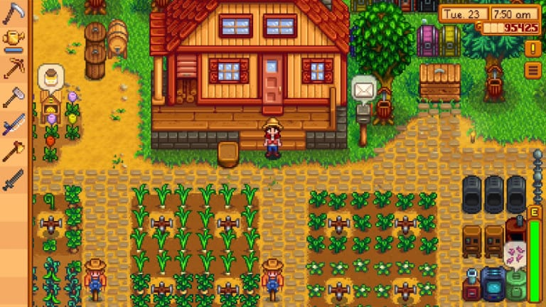

Welcome to the world of Stardew Valley!
Stardew Valley is a farming simulation role-playing game (RPG) made by just one individual developer. This wonderful game was the product of years of extremely hard work and tenacity, going against the odds and becoming an extremely successful game that founded the developer's entire career. As a farming simulation, this game's playable character is a farmer who lives in a very rural town. Through playing this game, you acclimate to the town full of many interesting and deep characters as you slowly build your thriving farm. Click on any of the links above to learn about the game more in-depth!